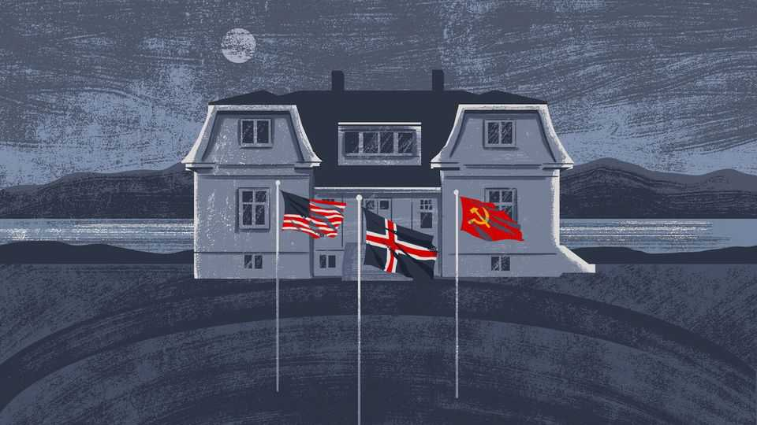

World leaders are losing their terror of nuclear war
Putin, Trump and Xi control the most powerful arsenals on Earth. They should take nuclear risks more seriously

Sep 10th 2026
FEAR CAN paralyse, but sometimes it saves the world. More than once in the cold war a shared dread of nuclear annihilation led American and Soviet leaders to pause and seek better ways to manage arsenals whose power defied decency and reason. Sometimes the terror felt by superpower rivals averted imminent disaster, as when John F. Kennedy and Nikita Khrushchev overruled their hardline counsellors to end the Cuban missile crisis of 1962. On other occasions the salutary effects of fear took longer to show themselves. A film, “The Brink of War”, has just been released to mark the 40th anniversary of a meeting between Ronald Reagan and his Soviet counterpart, Mikhail Gorbachev, in Reykjavik. Held in a cramped, reputedly haunted seaside house, the summit was intense and claustrophobic. Diplomats who took part recalled the two officers, one American and one Russian, who stood outside the leaders’ meeting room holding the “footballs” that controlled 60,000 nuclear warheads between them.
The meeting, in October 1986, was seen as a failure at the time. Later, though, Reagan’s secretary of state, George Shultz, credited it with laying the groundwork for subsequent treaties that scrapped whole categories of nuclear weapons. Gorbachev called Reykjavik the place where the cold war’s ending was set in motion. A big breakthrough involved a mutual admission by the American and Soviet leaders that they feared and despised nuclear weapons and—shocking their more hawkish advisers—that they aspired to eliminate them all, perhaps as soon as within ten years.
Talks were derailed by a dispute about Mutually Assured Destruction (MAD), the doctrine that, to avoid war, nuclear attacks must end in doom for all sides. Reagan, hating the idea of seeking peace through vulnerability, refused to halt his Strategic Defence Initiative (SDI), his (never-realised) dream of an interceptor shield against nuclear missiles. “I will not have future generations of Americans live in fear,” the film’s Reagan declares, echoing declassified transcripts. Gorbachev asks how he can begin to disarm, if a shield might let America renege and strike the USSR with impunity. He dismisses Reagan’s offer to share SDI as a “fantasy”.
Today the world has a new problem: its strongest countries are insufficiently horrified by their own nuclear firepower. America, China and Russia are all bent on enlarging or modernising their nuclear arsenals. As a result, they are either reluctant to join arms-control talks or have allowed previously agreed pacts to lapse.
President Donald Trump has called nuclear war the ultimate catastrophe, though he doubts people have the rationality needed for MAD to work. He told Playboy magazine way back in 1990 that it was “bullshit” to believe that nuclear weapons would never be used “because everybody knows how destructive it will be.” Yet now that he is commander-in-chief, Mr Trump treats nuclear risks with a startling lack of seriousness.
America long worked to stop new countries from joining the nuclear club, though for reasons of realpolitik it forgave India, Israel and Pakistan after they built nukes. Mr Trump’s views on nuclear arms races are hard to pin down. While still a candidate for the presidency in 2016 he said that it might be better for Japan to have nuclear weapons to deter North Korea than for it to rely on America for help. Now, in his second presidency, he has sought to sell nuclear technologies to such partners as Saudi Arabia and South Korea with fewer limits or safeguards than were seen in previous, similar deals. At home Mr Trump has pledged to build a “Golden Dome” interceptor system to shield America from missile attack. Belying the apparent sincerity of that ambition, he repeatedly picks fights with Canada, whose territory is needed for the radar stations that would make such a shield fully effective.
China’s leader, Xi Jinping, is on record as sternly opposing nuclear wars. Not for him the revolutionary fanaticism of Mao Zedong, who appalled communist-bloc leaders gathered in Moscow in 1957 by seeming to welcome a nuclear conflict that killed half of humanity, since “imperialism would be razed to the ground and the whole world would become socialist.” Xi-era China has ambitions to be so powerful by mid-century that no other country could or would dare to defy it. A world war would disrupt that rise.
At the same time, though, China rejects calls from America to take part in three-way talks with Russia on nuclear arms control. Its officials argue that the (growing) Chinese arsenal remains much smaller than those of its fellow great powers. Though China may not love North Korea’s nuclear warheads and missiles, or Iran’s attempts to get a bomb, it appears much less willing than it was a decade ago to support or enforce international sanctions designed to curb either country’s nuclear ambitions. Nor has China bowed to American demands that it bilaterally use its economic might to coerce them. Given that North Korea already has nuclear weapons and Iran’s rulers fear for their very survival, the sort of pain needed to change those countries’ calculations would have to threaten their regime security. China will not impose such pressure, because it loathes American-led campaigns of regime change more than it dreads roguish client states getting nukes.
Not for the first time, the most shocking change involves Russia under its president, Vladimir Putin. Far from aspiring to a world without nuclear weapons, Mr Putin these days uses nuclear threats and brinkmanship to intimidate, and to demand that his bankrupt mafia state be treated as if it were still a superpower.
The cold war was a time of cruelties and horrors. Yet just occasionally, a dread of global annihilation moved its leaders to greatness. Today the men who run America, China and Russia are not without fear. But too often, their concerns are selfish and inward-looking. Saving the world? Let someone else worry about that. ■